Memory Pot
A responsive memorial object for people dealing with pet grief that helps them process different emotions changing over time.
✦ Presented at SVA MFA Interaction Design Open Studios, New York City
A plant pot that responds to your emotions through the behavioral language of a dog.
Pet grief comes with a wave of different emotions. Sadness, but also happiness when a good memory surfaces, and then guilt for feeling happy at all. Most people try to suppress one or the other because it feels wrong to feel both.
Memory Pot mirrors whatever you are feeling back at you, through the instinctive behavioral language of a dog. It does not push you toward a different emotion. It simply tells you that whatever you feel is okay.

- Curious/Confused: the head tilts
- Happy: the tail wags
- Sad: the ears shake
The pot reads your face and responds with one of these movements. Place it in front of you and let it react to how you actually feel.
Exhibited at SVA MFA Open Studios, December 2025.
At the December 2025 Open Studios, I got to watch visitors interact with Memory Pot in person. Some were pet owners who had lost animals recently, or years ago. They stopped, stayed longer than expected, and shared stories I was not prepared for. Hearing them talk about their grief so openly, in front of something I built, was one of the most inspiring moments of this project.


See it in action!
The Research
Millions of people go through pet loss every year. And most of them carry it in silence, day after day.
Blue Cross's Pet Loss Support service alone received 30,689 requests for support in 2024, up from 20,381 the year before.
Source: Blue Cross, 2024
Studies place pet grief on par with the loss of a close family member. Yet the grief stays private in everyday life, because people fear others will not understand.
"People's understanding in the past 10 years has grown but where other people don't understand, is still something we see a lot." — Diane James, Head of Pet Bereavement Support Services, Blue Cross
Social Listening
What is the hardest thing in daily grieving?
Animal memorial posts and pet loss communities revealed what people rarely say out loud: the difficulty of riding out different emotions as they shift, and the guilt that comes when the sadness begins to lift.
"How can I be laughing when he's gone? Does this mean I'm getting over him?"
"My beloved Sashi who was an 11 year old schnauzer-poodle mix, developed cancer and it had spread everywhere. In her last days, she went blind. She was put down 2 days ago. I have found myself continuously feeling afraid of laughing, or feeling anything other than sad. It has stopped me from trying to do things that will make me feel better."
"My beloved pup passed away this weekend after 12 years. I can't seem to watch my shows or do anything without feeling guilty about being able to feel happiness after he passed. It's like I'm watching my favorite show 5 minutes in and I find myself enjoying it but then immediately thinks of my dog and how he'll never get another treat or play with his favorite toys and he's really gone forever and I just can't bring myself enjoy life when he can't anymore."
How might we help pet guardians process the waves of emotion after pet loss?
Playtest
Do people grieving need to be uplifted, or simply met where they are?
The concept was a plant pot that reacts to the person in front of it. Before building anything, I ran a playtest with 6 participants to understand what kind of reaction would feel right during grief. My assumption going in was that people would generally prefer positive responses, something warm and uplifting to help them feel better.
the prompt
If the potted plant had a face, what expression would you want it to make, and how would it make you feel?
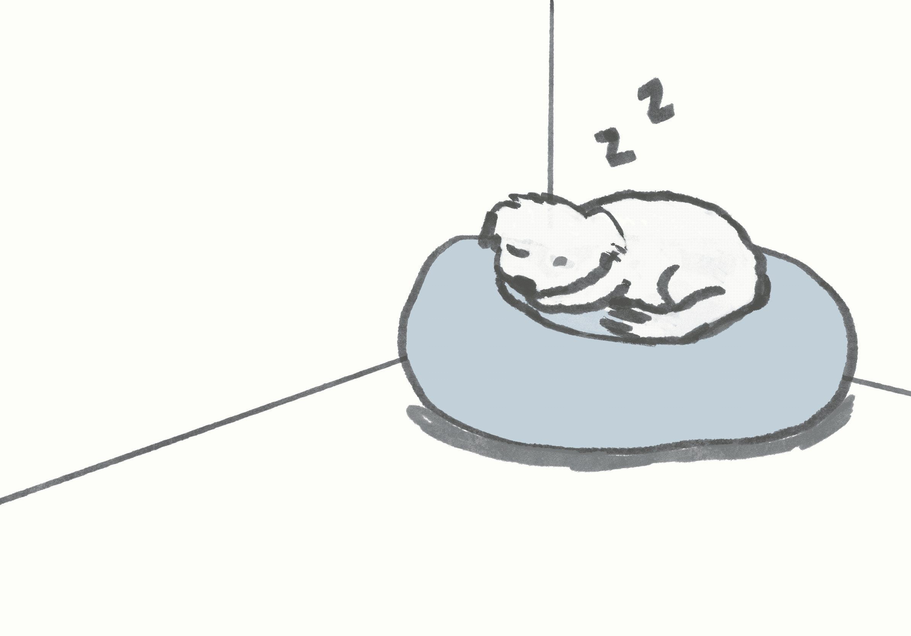
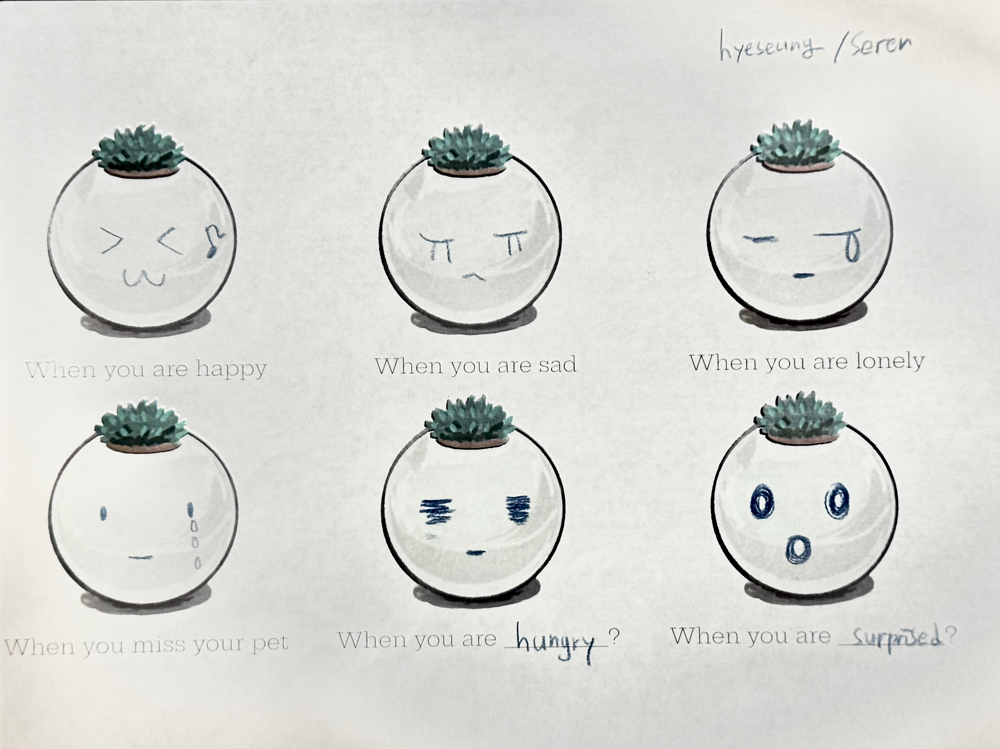
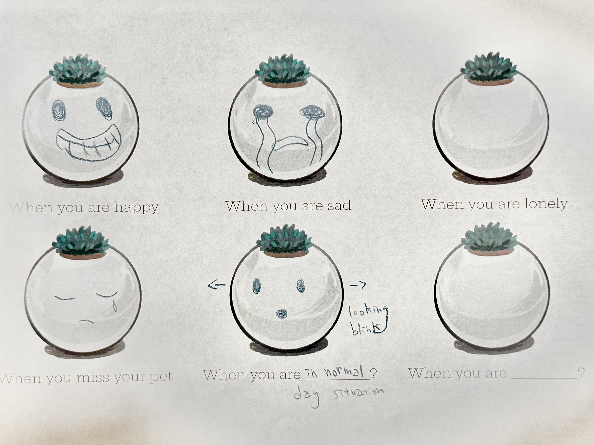
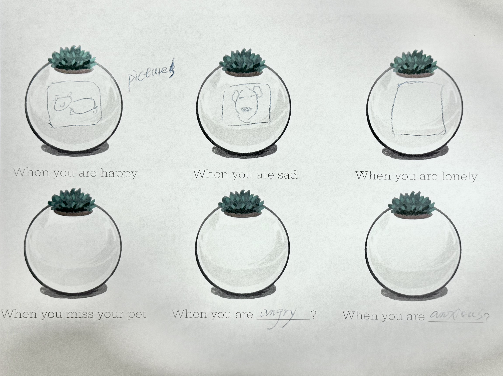
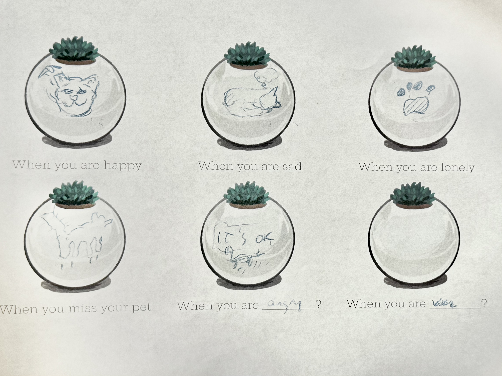
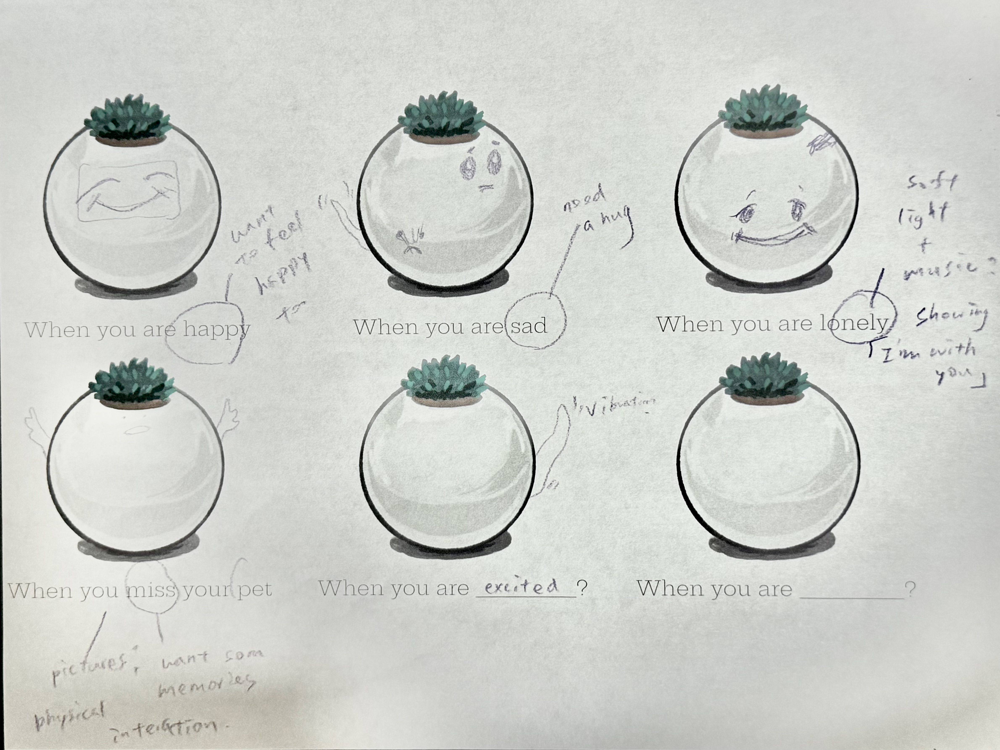
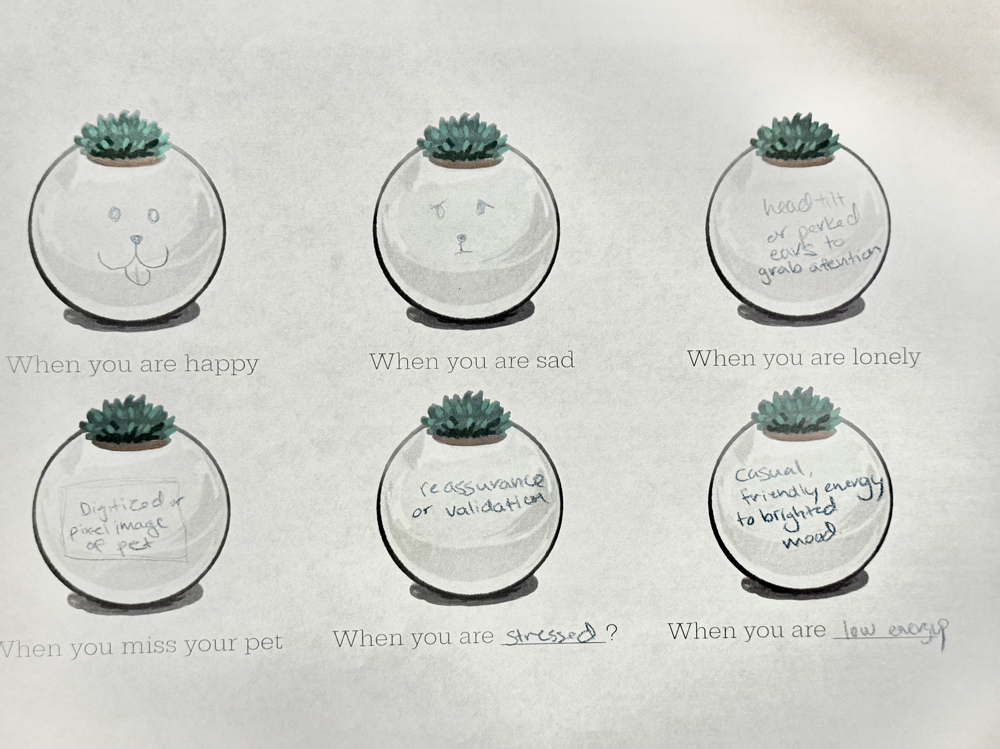
The Insight
The assumption was wrong. What people needed was not relief. It was permission to feel exactly what they already felt, without being rushed through it.
01
Be met in the sadness, not pulled out of it.
Participants did not want an object that pushed them toward positivity. They wanted permission to stay in the sad moment, and a reaction that acknowledged it without rushing them through it. The guilt people feel is not about being sad. It is about being okay.
"It feels good to be sad."
02
Be recognised as a person, not given a generic response.
When the reaction was a generic digitalized emoji, people felt nothing. What they wanted was something personal, something that felt like it actually knew them, not a pre-programmed response that could belong to anyone.
"It's hard to resonate with random digital emotions."
Design Decisions
- The object mirrors what you feel rather than pushing you toward something else.
- Instinctive dog movements feel personal and familiar in a way that generic digital expressions do not.
- A physical memorial shares the same space as the grief, which is what makes the mirroring feel real.
The Build
01 System
The entire system runs on a Raspberry Pi 5 hidden inside the pot.
The camera inside the enclosure runs continuously on a Raspberry Pi 5. When it detects a face, the LED switches on to illuminate the viewer and improve the feed. DeepFace then reads the dominant emotion frame by frame. Each reading sends a GPIO signal to the corresponding servo, and the pot responds.
 happiness
happiness
 sadness
sadness
 curiosity/confusion
curiosity/confusion
02 Form
Made from white cardboard to stay symbolic rather than literal.
The original plan was synthetic white fur fabric. It was dropped immediately. It looked too much like the pet itself, which closed off the meaning rather than opening it.
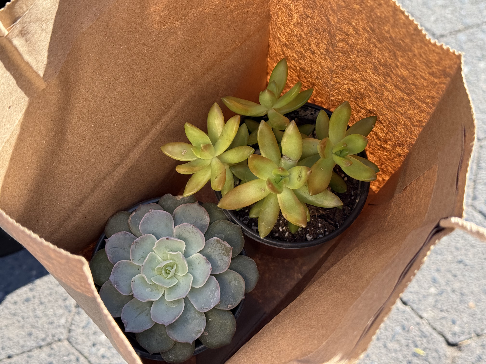
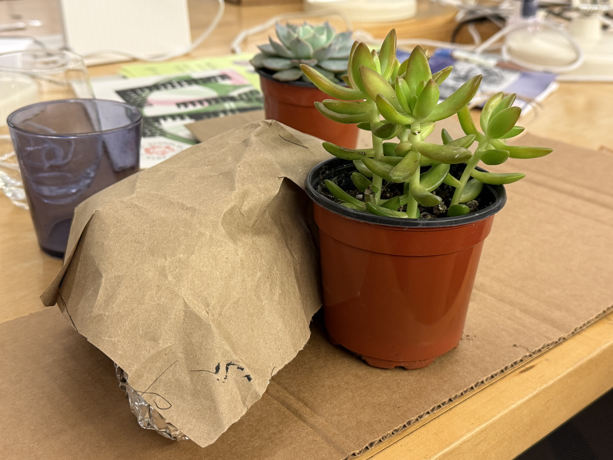
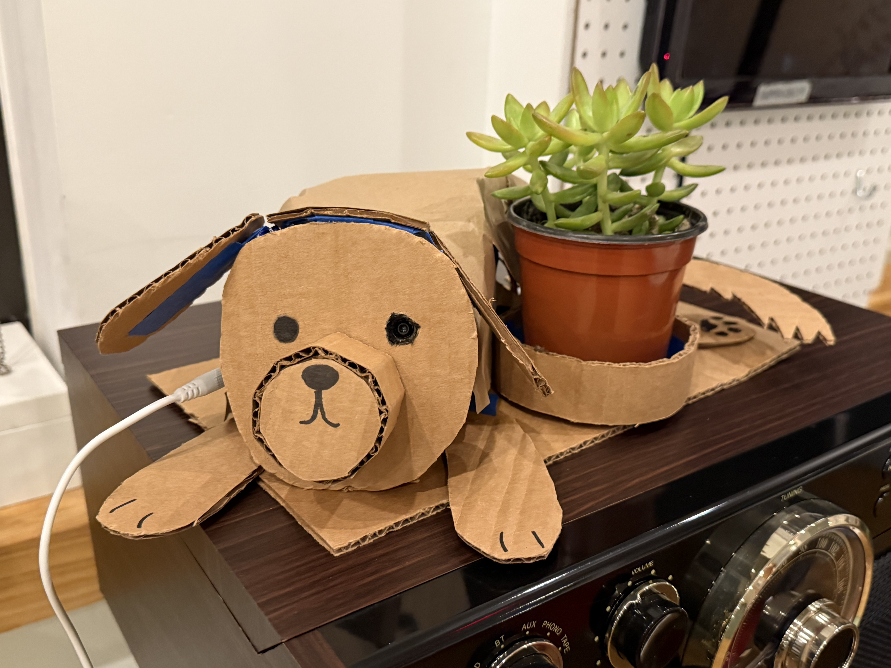
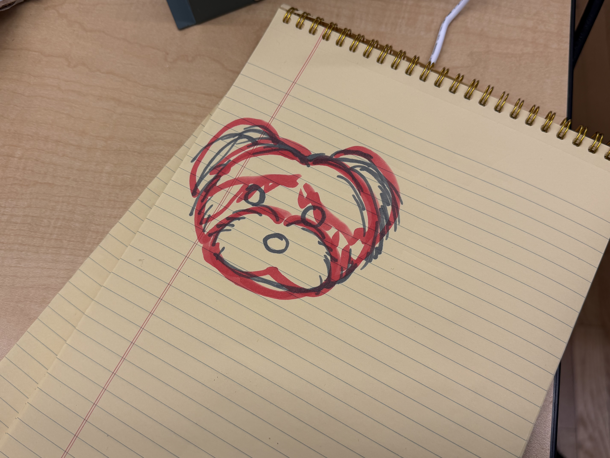
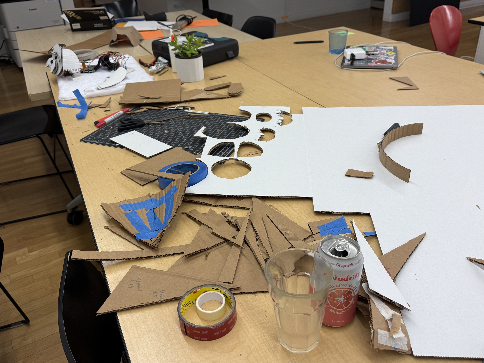

Cardboard leaves room for the viewer to bring their own meaning to the object. The Raspberry Pi, camera, and wires were all hidden inside the box. The design is also easy to replicate and share, so anyone dealing with grief can build one themselves.
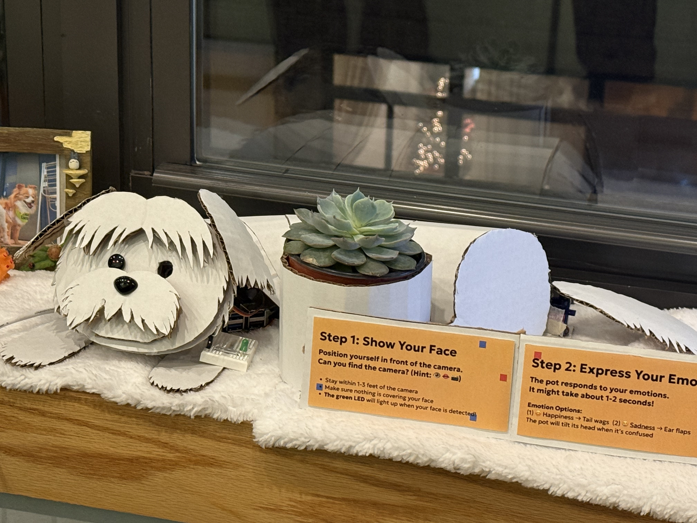
Reflections
Challenges
- Detecting emotion accurately enough to feel responsive, not random
- Designing for grief without making the object feel heavy or clinical
Accomplishments
- A self-contained emotional object that runs without a laptop
- Emotion detection working live through a hidden camera in the pot
Learnings
- People were comfortable showing emotions in front of the pot. Some talked to it and tried to pet it as if it were alive. The physical body likely influenced this, though it needs further research.
- Without instructions, features like the green light were unclear. Once explained, people found it intuitive. There might be a better way to build that understanding into the object itself.
Next Steps
A few things stood out as worth building toward.
The most immediate problem is calibration. Right now, the model reads emotion from a general baseline that does not account for individual faces. A better version would ask each person to make four expressions when they first approach, using that as a personal reference point. It would also teach people how to interact with the pot without needing a sign next to it.
DeepFace performed noticeably less accurately with darker skin tones and East Asian features. This is a known bias in many facial recognition datasets and needs to be addressed before the project could work fairly for a broad audience.
"It is okay to be sad. It is also okay not to be."